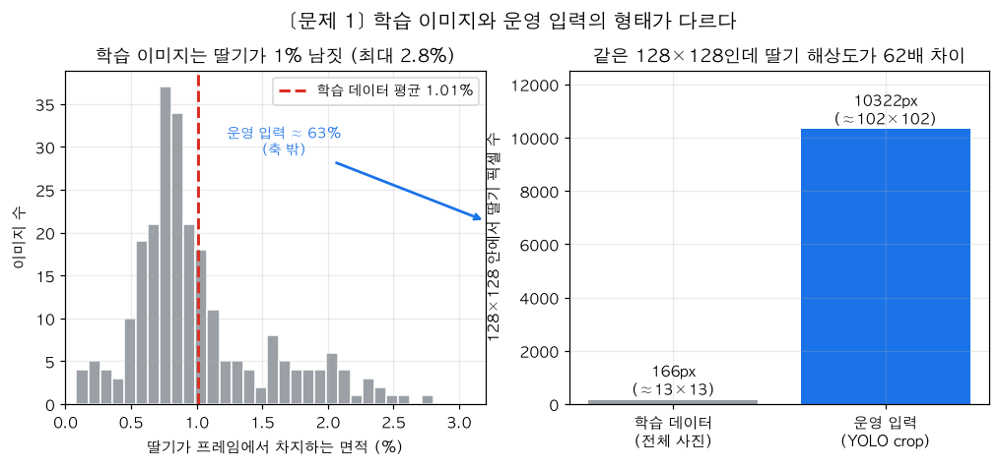
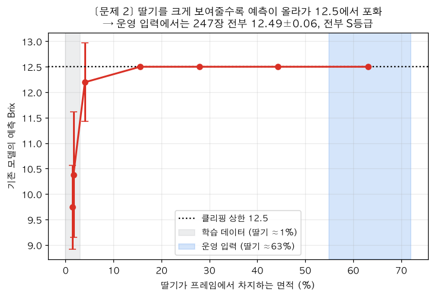
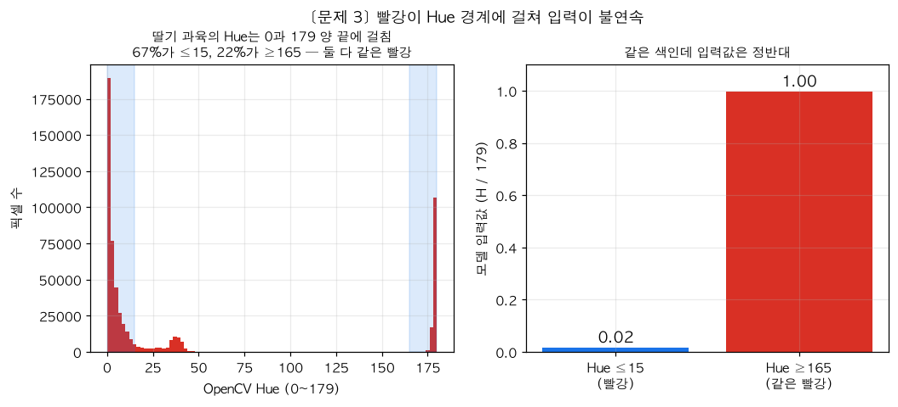
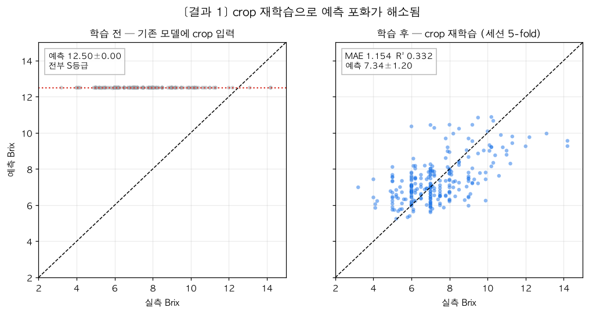
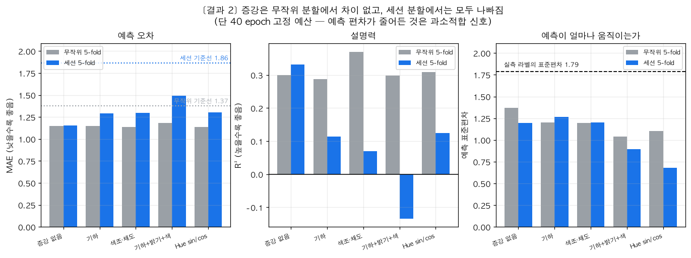
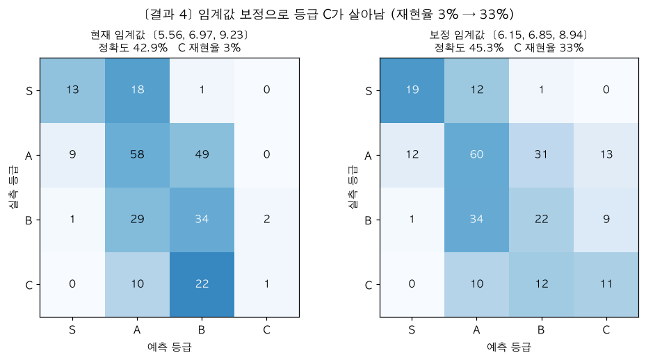
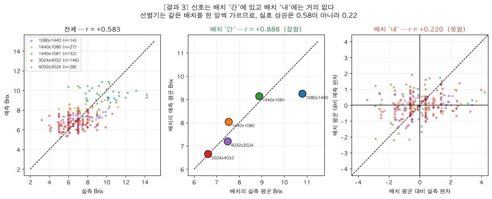

문제
배포 파이프라인이 상수를 출력하고 있었다
detect_fruit.py가 YOLO로 잘라 넘기는 crop을 기존 모델에 넣으면
247장 전부가 12.49±0.06 Brix, 클리핑 상한에 달라붙는다. 등급은 전부 S다.
기존 평가에서 이게 보이지 않았던 이유는, 평가를 전체 사진으로 했기 때문이다. 운영에서 실제로 들어오는 입력 형태로는 아무도 재보지 않았다.
원인 — 학습 이미지와 운영 입력의 형태가 다르다


측정 수단 자체가 없었다
test_images/는train_images/의 바이트 단위 동일한 부분집합(061–073.jpg)이었다. held-out 검증셋이 아예 없었다.- 학습 파이프라인이 저장소에 빠져 있었다. 모델을 학습시킨 흐름 자체는 이전부터 있었고
.pth5개가 그 결과물이다. 다만 그 코드가 커밋된 적이 없어(git log --all로 확인) fold 분할·epoch·증강·손실 설정이 어디에도 남아 있지 않고, 재학습할 방법도 없었다.
Hue 표현이 빨강에서 끊긴다

H/179에서는 0.02와 1.00으로 정반대 값이 된다.시도
쓰던 학습 파이프라인을 저장소에 들이기
저장소에 빠져 있던 것을 채워 넣는 작업이다. 모델 구조와 전처리는 기존 흐름을 그대로 따르되, 학습·평가 과정을 코드로 남겨 다시 돌릴 수 있게 했다.
| 파일 | 역할 |
|---|---|
make_crops.py | 원본 사진 → 딸기 박스 crop 데이터셋. HSV 빨강 마스크, 247/247 성공 |
dataset.py | 전처리·증강·분할. 전처리는 여기 한 곳에만 둠 |
train.py | 학습·조기종료·held-out 평가 |
crossval.py | k-fold 교차검증 (무작위 / 세션 그룹) |
grades.py | 등급 성능 분석·임계값 재보정 |
plots.py | 결과 시각화 |
전처리를 dataset.py 한 곳에 모으고 추론 코드가 같은 것을 쓰게 했다.
학습과 추론의 전처리가 갈라지는 것이 이 프로젝트가 망가진 바로 그 원인이었다.
학습 방법
모델 BrixRegression6CH_Deep (기존과 동일, 파라미터 1,208,065개) 입력 딸기 crop → 128×128 → RGB 3채널 + HSV 3채널 = 6채널 손실 Huber (SmoothL1, beta=1.0) 최적화 Adam · lr 1e-3 · weight decay 1e-4 · CosineAnnealing 배치 32 예산 40 epoch 고정 · 조기 종료 없음
조기 종료를 끈 것이 중요한 판단이었다. 처음에는 검증 MAE 기준 조기 종료를 썼는데 best epoch가 4–54로 들쭉날쭉했다. 검증셋이 48장뿐이라 “언제 멈출지” 자체가 운에 좌우됐고, 증강은 수렴이 느린데 짧은 patience가 먼저 끊어 구조적으로 불리했다. 실제로 기하 증강 순위가 조기 종료에서는 최하위, 고정 예산에서는 중위권으로 뒤집혔다.
두 가지 분할로 평가
| 분할 | 테스트 구성 | 재는 것 |
|---|---|---|
| 무작위 5-fold | 모든 세션이 섞임 | 같은 촬영 조건의 새 딸기 |
| 세션 5-fold | 한 촬영 회차를 통째로 | 처음 보는 촬영 조건의 새 딸기 |
두 분할을 모두 쓴 이유는 이 데이터에서 촬영 세션이 당도와 엮여 있기 때문이다. 이미지 내용을 전혀 보지 않고 원본 해상도(=세션)만으로 Brix를 예측하면 MAE 1.095 / R² 0.408이 나온다. 무작위 분할만 쓰면 모델이 딸기가 아니라 촬영 조건을 외워도 점수가 나온다.
두 분할 모두 247장 전부가 정확히 한 번씩 테스트된다. 누수 검증 완료.
결과
학습 전 / 후

모델 vs 오라클 기준선(테스트 셋의 참 평균을 공짜로 아는, 실제로는 불가능한 상대): MAE 차이 −0.225, 95% CI [−0.344, −0.104].
그것조차 유의하게 이긴다. 사진에서 당도 신호를 실제로 읽고 있다는 뜻이다.
촬영 조건을 외운 것이 아니다
| 분할 | MAE | R² | 기준선 | 기준선 대비 |
|---|---|---|---|---|
| 무작위 5-fold | 1.150 | 0.300 | 1.375 | 16.3% |
| 세션 5-fold | 1.154 | 0.332 | 1.864 | 38.1% |
세션을 통째로 빼도 성능이 유지된다. 처음 세운 가설 — “모델이 종이·조명으로 세션을 알아보고 평균 당도를 외운다” — 은 틀렸다. 그랬다면 세션을 빼는 순간 무너졌어야 한다.
증강 비교

| 조합 | 무작위 MAE / R² | 세션 MAE / R² | R² 손실 |
|---|---|---|---|
| 증강 없음 | 1.150 / 0.300 | 1.154 / 0.332 | +0.032 |
| 기하 (뒤집기·회전) | 1.147 / 0.288 | 1.289 / 0.114 | −0.174 |
| 색조·채도 (±6°/±20%) | 1.135 / 0.370 | 1.299 / 0.070 | −0.300 |
| 기하+밝기 · Hue sin/cos | 1.137 / 0.310 | 1.302 / 0.125 | −0.184 |
| 기하+밝기+색 | 1.182 / 0.299 | 1.492 / −0.134 | −0.433 |
페어드 부트스트랩(동일 247장, 10,000회):
| 분할 | 판정 |
|---|---|
| 무작위 5-fold | 5개 조합 전부 차이 없음 CI가 모두 0을 포함 |
| 세션 5-fold | 증강 건 4개 모두 유의하게 나쁨 CI가 모두 0 초과 |
“증강이 해롭다”고 단정할 수 없다. 40 epoch 고정 예산에서 증강을 걸면 수렴이 느려 과소적합한 것일 수 있다. 예측 표준편차가 그 증거다 — 증강 없음 1.20 → 기하+밝기+색 0.89 → Hue sin/cos 0.68. 과적합을 막은 게 아니라 아직 못 배운 모양이다. 긴 예산(100–150 epoch)에서의 재확인이 필요하다.
학습과 무관한 독립 측정도 같은 방향을 가리킨다. 같은 딸기를 증강한 뒤 “색 통계 ↔ Brix” 상관이 얼마나 남는지 재면:
| 증강 | 색조 신호 유지율 | 채도 | 명도 |
|---|---|---|---|
| 기하 | 99% | 98% | 99% |
| 밝기 ±20% | 96% | 94% | 87% |
| 색조±6° · 채도±20% | 41% | 58% | 100% |
색조 증강이 만드는 같은 딸기 안의 색조 흔들림(±51.9)이 딸기 사이의 실제 차이(±37.98)보다 크다. 구분해야 할 것을 뭉개는 셈이다. Hue 끊김 때문에 ±6°만 흔들어도 입력값이 0↔1로 점프하는 것이 원인이다.
등급 성능

[5.56, 6.97, 9.23]에서는 등급 C가 거의 나오지 않는다. 재학습 전 재현율 0%, 재학습 후에도 3%다. 예측 분포에 맞춰 임계값을 다시 잡으면 33%까지 오른다.| 임계값 | 등급 정확도 | S | A | B | C |
|---|---|---|---|---|---|
| 현재 [5.56, 6.97, 9.23] | 42.9% | 41% | 50% | 52% | 3% |
| 보정 [6.15, 6.85, 8.94] | 45.3% | 59% | 52% | 33% | 33% |
재학습만으로는 C 문제가 풀리지 않는다. 임계값 보정이 함께 필요하다. 단 위 보정값은 테스트 셋에서 뽑아 낙관적이므로, 실제로는 학습/검증 예측으로 구해야 한다.
가장 중요한 발견 — 신호는 배치 ‘간’에 있지 ‘내’에 없다

| 구분 | 상관 r | 의미 |
|---|---|---|
| 전체 247장 | +0.583 | 겉보기 성능 |
| 배치 ‘간’ (세션 평균 5점) | +0.888 | 배치의 전반적 당도 수준은 잘 맞힘 |
| 배치 ‘내’ (장수 가중 평균) | +0.228 | 같은 배치 안에서 거의 구분 못 함 |
세션별 R²는 다섯 개 모두 음수다(−0.012 ~ −0.794). 한 배치 안에서는 그 배치의 평균을 답하는 것보다 못하다.
이것은 세션을 외운 것이 아니다. 세션을 통째로 뺐는데도 그 세션의 당도 수준을 맞혔으므로, 색에서 배치 수준의 숙도를 실제로 읽고 있다. 다만 개별 딸기를 가르는 힘이 약하다.
선별기는 컨베이어에 올라오는 딸기를 한 알씩 등급 매기고, 그 딸기들은 보통 같은 배치다. 그 조건에서 실효 상관은 0.58이 아니라 0.22다. 겉보기 MAE·R²만 보면 이 한계가 보이지 않는다.
선택과 근거
| 선택 | 근거 |
|---|---|
| 딸기 crop으로 학습 | 운영 입력과 형태를 맞춤. 포화 해소의 직접 원인 |
| 증강 없음 | 두 분할 어디서도 이득 없음. 세션 분할에서는 유의하게 해로움 |
| HSV 6채널 유지 | Hue sin/cos가 릿지 회귀에서는 이득(R² 0.236→0.346)이었으나 CNN에서는 유의하지 않음 |
| 40 epoch 고정 | 조기 종료는 검증 48장에서 운에 좌우되고 증강에 불리함 |
| 세션 5-fold를 주 지표로 | 무작위 분할은 세션 누수를 막지 못함 |
| 임계값 보정 필요 | 재학습만으로 등급 C 재현율이 3%에 그침 |
앞으로의 과제
1순위 — 배치 내 판별력 (데이터 문제)
지금 신호는 거의 배치 간에만 있다(배치 내 r=0.22). 선별기는 같은 배치를 한 알씩 가르므로, 이것을 못 올리면 모델을 아무리 손봐도 제품이 동작하지 않는다.
필요한 것은 같은 날·같은 조명에서 당도가 서로 다른 딸기를 모아 찍은 데이터다. 현재 데이터는 배치마다 당도가 몰려 있어(세션별 평균 6.62–10.80) 이 능력을 학습시킬 수가 없다.
2순위 — 긴 예산에서 증강 재확인
40 epoch에서는 증강이 과소적합한다. 100–150 epoch에서 다시 재야 “증강이 해로운가”에 답할 수 있다.
3순위 — 임계값 보정을 학습/검증 기준으로
grades.py가 준비되어 있다. 현재 보고한 보정값은 테스트 셋에서 뽑아 낙관적이다.
그 밖에
- 모델 축소 — 파라미터 1,208,065개 / 학습 이미지 149–186장. 이미지당 8,000 파라미터로 용량이 심하게 과하다.
- 라벨 해상도 — 247장에 고유 Brix 값이 61개뿐이고 정수에 몰려 있다.
- 회귀 대신 4-클래스 분류 — 어차피 필요한 건 S/A/B/C 네 칸이다. 분류로 가면 클래스 불균형을 손실 함수로 다룰 수 있고 C 문제를 직접 제어할 수 있다.
사진으로 당도를 맞히는 과제 자체가 어렵다. 색은 숙도와, 숙도는 당도와 연관되지만 둘 다 느슨하다. 측정된 상한이 r ≈ 0.58, MAE ≈ 1.15다. 배치 내 MAE 1.0 아래를 현실적 목표로 잡는 것이 좋다.
트러블슈팅
작업하면서 실제로 막혔거나, 하마터면 잘못된 결론을 낼 뻔한 지점들.
01계층 이름을 바꿨더니 가중치가 조용히 안 실림
가독성을 위해 self.fc를 self.head로 바꿨다. 그런데 저장된 .pth의 키가 fc.1.*, fc.4.*였다. 기존 코드가 load_state_dict(state, strict=False)를 쓰고 있어 에러 없이 회귀 head만 무작위 초기값으로 로드될 상황이었다.
missing, unexpected = model.load_state_dict(state, strict=False)
if missing or unexpected:
raise RuntimeError("가중치 구조가 모델과 다릅니다: ...")
strict=False는 “유연함”이 아니라 “조용한 실패”다.
02프로세스 경계에서 플래그 이름이 어긋남
controller.py가 --save-crop-once를 넘기는데, 리팩터링 중 검출 스크립트에서 그 플래그를 없앴다. 단위 테스트로는 안 잡히는 종류의 버그다.
cmd = capture_popen_argv(controller.start_detect)
opt = detect_fruit.parse_opt(cmd[2:]) # argparse가 거부하면 실패
제어 코드가 만드는 argv를 실제 대상 파서에 먹여보는 테스트를 추가했다.
03조기 종료가 증강을 체계적으로 불리하게 만듦
1차 실험에서 기하 증강이 최하위였는데, best epoch가 4였다. patience 15라 19 epoch 만에 끝난 것이다. 증강은 매 epoch 데이터가 달라져 수렴이 느린데, 짧은 patience가 먼저 끊었다.
고정 예산으로 바꾸자 같은 조합이 중위권으로 올라왔다.
“증강이 나쁘다”가 아니라 “내 실험 설계가 증강을 불리하게 만들었다”였다. 지표를 믿기 전에 학습 곡선과 best epoch를 보자.
04임계값 재보정에서 정답지까지 같이 움직임
grades.py 초안이 임계값을 바꿀 때 실측 등급까지 같이 바꾸고 있었다. 실측 분포가 S32 A116 B66 C33 → S48 A116 B15 C68로 변해 비교가 성립하지 않았다.
def grade_metrics(pred, true, thresholds, true_thresholds=None):
"""true_thresholds는 정답지 정의. 재보정 시 고정해야 합니다."""
보정 대상과 정답지를 분리하지 않으면 개선처럼 보이는 숫자가 나온다.
05한 시드만 보고 결론을 낼 뻔함
Hue sin/cos가 seed 0에서 MAE 0.997로 1위였다. seed 1에서는 1.115로 뒤집혔다. 시드 간 변동(0.084)이 조합 간 차이(0.179)와 맞먹는 수준이었다.
그래서 k-fold로 옮겼다. 247장 전부가 한 번씩 테스트되므로 같은 계산량으로 훨씬 단단한 추정을 준다 — 시드를 늘리는 것보다 효율적이었다.
06전체 R²는 양수인데 fold별 R²가 전부 음수
이것을 그냥 넘겼다면 “성능 R² 0.33”으로 보고하고 끝났을 것이다. 분해해 보니 배치 간 신호(r=0.888)와 배치 내 신호(r=0.228)가 완전히 달랐다.
집계 지표가 양수라고 안심하면 안 된다. 그룹 구조가 있는 데이터에서는 그룹 간/내를 분리해 봐야 한다.
07백그라운드 실행 중 코드를 고쳐도 반영되지 않음
train.py에 예측값 저장을 추가했는데, 이미 돌고 있던 실험은 수정 전 모듈을 메모리에 올린 상태였다. 그대로 뒀으면 90분을 돌리고도 사후 분석을 못 할 뻔했다.
3분 경과 시점이라 재시작했다. 긴 작업 중 코드를 고쳤다면 반영 여부부터 확인하자.
08셸 작업 디렉터리가 명령 사이에 유지됨
cd brix_model 후 다음 명령에서 cat > brix_model/dataset.py를 실행해 파일이 생성되지 않았다. 장시간 실험을 nohup으로 띄울 때도 같은 이유로 실행 자체가 실패해 15분을 날렸다.
백그라운드 작업은 절대 경로로 띄우고, 띄운 직후 로그를 확인하자.
재현 방법
# 환경 (운영 코드는 Jetson Python 3.6 기준, 학습 실험은 로컬 Python 3.12) python3 -m venv --system-site-packages .venv .venv/bin/pip install opencv-python-headless pandas torch matplotlib cd brix_model python make_crops.py # 딸기 crop 데이터셋 (data/crops/) python train.py --tag myrun --epochs 40 --patience 0 python crossval.py --split random # 무작위 5-fold python crossval.py --split session # 세션 5-fold (주 지표) python experiments.py --seeds 0 1 # 증강 조합 비교 python grades.py ../data/runs/crossval_session.json # 등급 분석·임계값 보정 python plots.py # 그림 생성
data/는 .gitignore 대상이다. 다른 환경에서는 make_crops.py부터 다시 돌리면 된다.